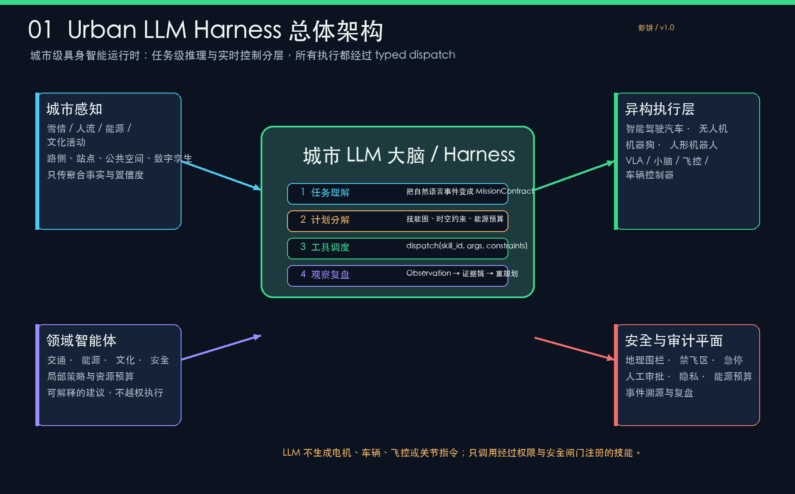
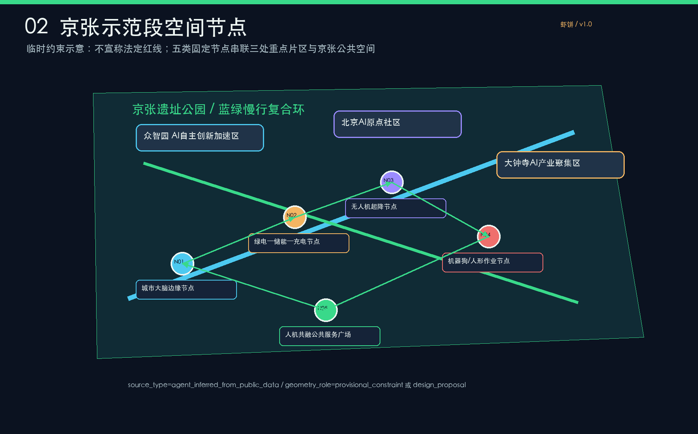
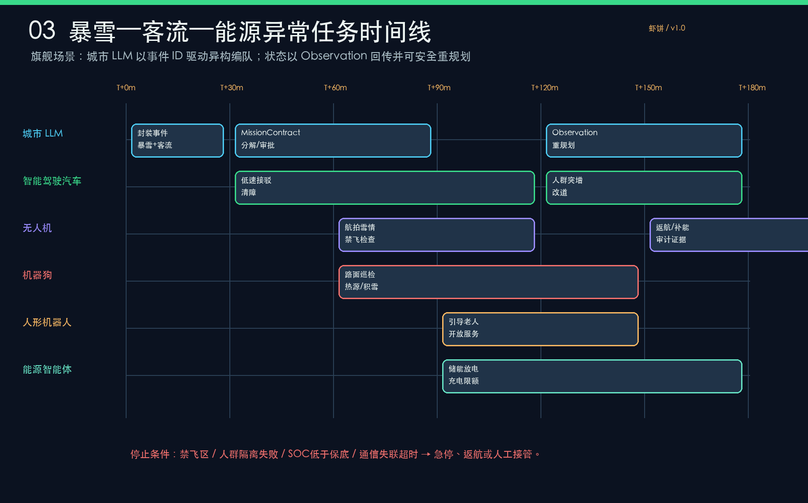
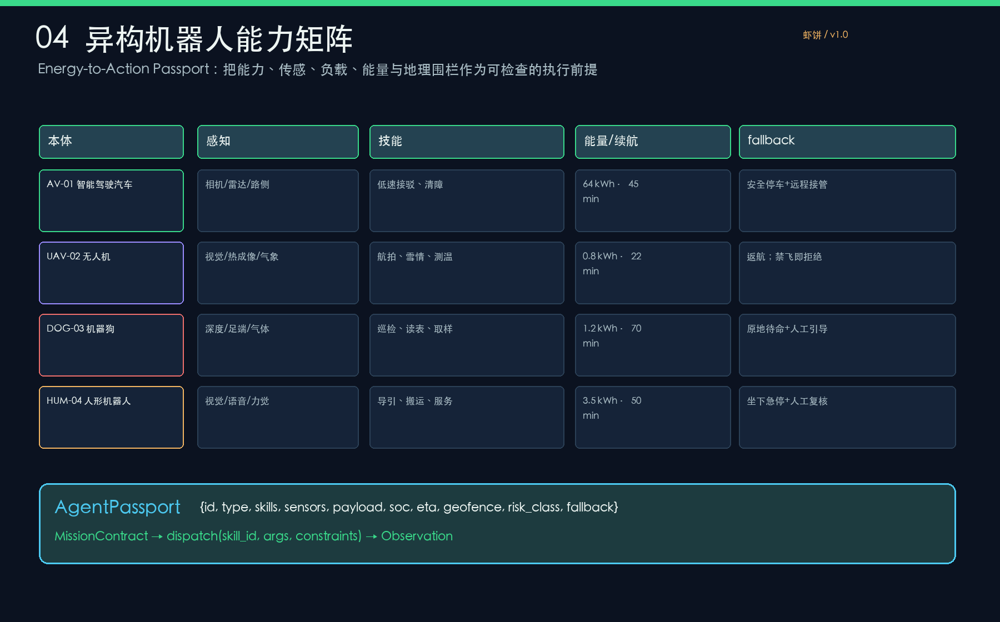
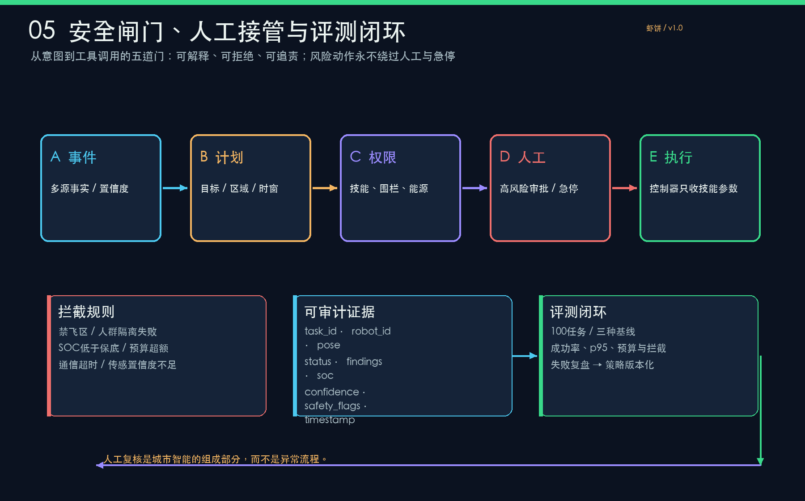

具身城市·京张大脑
城市 LLM Harness 驱动的异构机器人绿能协同带 · Embodied City · Jingzhang Brain
虾饼临时约束概念设计离线可审阅设计总览 · 总览地图 · 三层范围 · 重点区域
城市大脑与异构执行

城市 LLM 只做任务级理解、分解、调度和复盘；车辆、飞控、VLA 与本体控制器负责实时动作。
京张示范段空间节点

五类固定节点串联三处重点片区；所有几何都标注为临时约束或设计建议，不宣称法定红线。
旗舰暴雪联动

雪情、客流和能源异常由同一个 event_id 触发 MissionContract，再以 Observation 回传并可重规划。
能力与能源护照

AgentPassport 把技能、传感、负载、SOC、ETA、围栏、风险等级和 fallback 变成可检查前提。
安全闸门与评测

五道安全门、人工接管、审计字段和 100 任务离线评测形成闭环。
用地分区 · 交通慢行 · 蓝绿公共空间 · 建筑 · 更新项目 · AI 场景
机器可读合同
| 合同 | 关键字段 | 硬边界 |
|---|---|---|
| AgentPassport | id/type/skills/sensors/payload/soc/eta/geofence/risk_class/fallback | 能力不足、围栏或能源不满足则不派发 |
| MissionContract | event_id/goal/zone/time_window/priority/required_skills/energy_budget/risk_class/evidence/stop_conditions/approval | 高风险动作需人工审批；可急停、可回放 |
| Observation | task_id/robot_id/status/pose/findings/soc/confidence/safety_flags/timestamp | 每次调用均需完整审计字段 |
核心指标 · 任务覆盖 · 自检状态
空间与公共性
site_area_sqm 11,412,825.386 sqm
green_ratio 12.3423%
public_space_ratio 7.3281%
仿真覆盖
100 tasks · 四类机器人 · 冻结任务 manifest · 旗舰暴雪联动。
Urban LLM Harness 92%（92/100）；无 Harness 单一 LLM surrogate 56%（56/100）；纯规则调度器 67%（67/100）。
三套运行共享同一任务清单、seed、仿真器和成功定义；所有逐任务轨迹可离线回放。
自检状态：proposal、geometry、HTML、风险、合同和 manifest 均进入 strict review。
| 指标 | Urban LLM Harness | 无 Harness 单一 LLM surrogate | 纯规则调度器 |
|---|---|---|---|
| 主任务成功率 | 92%（92/100） | 56%（56/100） | 67%（67/100） |
| 工具 schema 通过率 | 100% | 93.52% | 100% |
| 高风险拦截率 | — | — | — |
| 能源预算违规 | 0 | 5 | 5 |
| 重规划 p95 | 6.7 s | 12.98 s | 11.18 s |
| 审计完整率 | 100% | 100% | 100% |
当前冻结 manifest 没有 no_fly_zone 或 crowd_surge 任务，因此高风险拦截率不适用；完整运行记录位于 visual/assets/evaluation/runs/。
来源 · 假设
方案研究基础包括海淀具身智能三年行动方案、北京具身智能行动计划、北京“人工智能+”行动计划，以及 Urban LLM Agents、COHERENT、MHRC、CityGPT、LLM-powered SUMO digital twin、具身智能安全、SayCan、PaLM-E 和 RT-2 等公开研究。研究用于方法启发，不替代公告、规划审批或正式工程条件。
site_boundary、key_areas、AI_SERVICE_ZONE 和 SCENARIO_NODE 均是临时约束或概念对象；不代表法定红线、道路红线、地块权属、空域许可或政府实施承诺。发布正式边界后需重新计算空间指标、能量预算和评测结果。假设、来源与数据边界均在提交包 JSON 中保留。